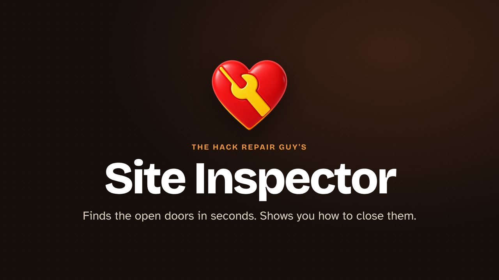

Plain-language findings
Each one says why it matters, what was observed and what to do, with a button to the right admin page. Passing checks fold away.
Free WordPress security checkup
A friendly, read-only security checkup for WordPress. In a few seconds it looks for the things most hacked sites had in common, then tells you in plain language what it found and what to do next.
Free and open source (GPL-2.0-or-later). Needs WordPress 6.9.4 or newer and PHP 7.4 or newer.
Run an inspection, read a finding, check what changed since last time, and send the report to the people who can fix it.

Free, and updates arrive inside WordPress.
Automated tools check thousands of sites a day for the same handful of openings. Site Inspector looks for exactly those.
A plugin, theme or WordPress itself with an update waiting.
A powerful account that's new, unusual, or simply forgotten.
Code sitting where only images and documents belong.
Backups, logs and old config copies anyone could download.
Open Tools › Site Inspector and click Inspect this site. It takes a few seconds.
wp-config.php copieswp-config.php permissionsNo security score and no scare tactics. Just what was found, why it matters, and where to go to fix it.
Each one says why it matters, what was observed and what to do, with a button to the right admin page. Passing checks fold away.
Up to 25 reports are saved on your own site, so each checkup shows what's new and what you've fixed. Pause or clear it any time.
Copy it, download it, print it with usernames masked, or email a plain-language "state of security" briefing to your site's administrators.
An inspection reads your site's settings and file listings without opening file contents, applying fixes or contacting any outside service. Reports are stored only in your own WordPress database, and leave it only when an administrator chooses to export or email one. Emails can go only to the site's own administrators.
Plugin updates come from this project's GitHub releases, separately from inspections. Site Inspector is not a malware scanner, a firewall or a vulnerability feed. "Nothing found" means just that, for the check described. If you think your site has been hacked, The Hack Repair Guy can help.
Under Settings › Site Health Controls you can switch off WordPress's Site Health menu, dashboard widget, background tests and weekly check, with exemptions for administrators or specific users.
Later updates arrive on the normal Plugins screen, from this project's GitHub releases.